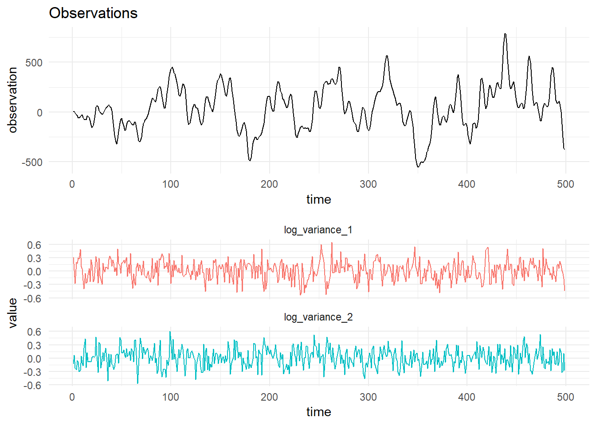
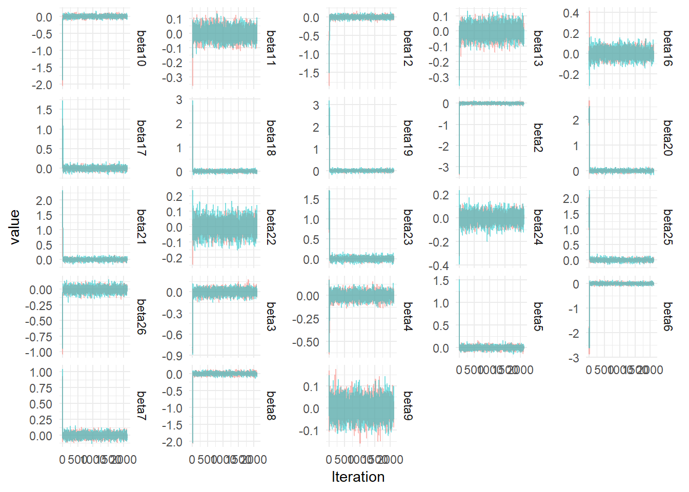
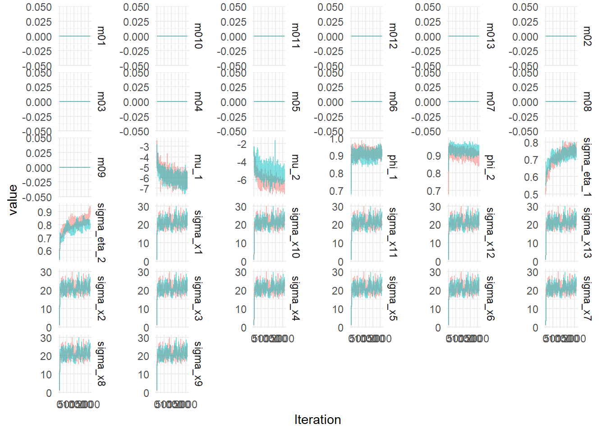

Factor Stochastic volatility models typically model centered data. Combining the DLM with the FSV model allows us to model multivariate non-centered time series.

## # A tibble: 85 x 3
## Parameter `mean(value)` actual_value
## <chr> <dbl> <dbl>
## 1 beta1 1 1
## 2 beta10 -0.00448 2.15
## 3 beta11 -0.00142 -1.16
## 4 beta12 -0.00377 2.07
## 5 beta13 -0.000421 12.5
## 6 beta14 0 0
## 7 beta15 1 1
## 8 beta16 0.000698 2.74
## 9 beta17 0.00509 0.95
## 10 beta18 0.00999 -7.4
## 11 beta19 0.0142 8.2
## 12 beta2 -0.00899 4.94
## 13 beta20 0.00961 -2.8
## 14 beta21 0.00950 -2.2
## 15 beta22 0.000192 -0.75
## 16 beta23 0.00651 0.31
## 17 beta24 -0.00144 1.46
## 18 beta25 0.00794 2.18
## 19 beta26 -0.00334 -4
## 20 beta3 -0.00202 3.38
## 21 beta4 -0.00260 5
## 22 beta5 0.00200 -4.57
## 23 beta6 -0.00909 -0.12
## 24 beta7 0.00107 1.35
## 25 beta8 -0.00519 -10.6
## 26 beta9 -0.000439 -1.39
## 27 c01 1 1
## 28 c010 1 1
## 29 c011 1 1
## 30 c012 1 1
## 31 c013 1 1
## 32 c02 1 1
## 33 c03 1 1
## 34 c04 1 1
## 35 c05 1 1
## 36 c06 1 1
## 37 c07 1 1
## 38 c08 1 1
## 39 c09 1 1
## 40 m01 0 0
## 41 m010 0 0
## 42 m011 0 0
## 43 m012 0 0
## 44 m013 0 0
## 45 m02 0 0
## 46 m03 0 0
## 47 m04 0 0
## 48 m05 0 0
## 49 m06 0 0
## 50 m07 0 0
## 51 m08 0 0
## 52 m09 0 0
## 53 mu_1 -5.84 0
## 54 mu_2 -5.61 0
## 55 phi_1 0.906 0.8
## 56 phi_2 0.917 0.8
## 57 sigma_eta_1 0.714 0.2
## 58 sigma_eta_2 0.787 0.2
## 59 sigma_x1 20.9 0.1
## 60 sigma_x10 20.9 0.1
## 61 sigma_x11 20.9 0.1
## 62 sigma_x12 20.9 0.1
## 63 sigma_x13 20.9 0.1
## 64 sigma_x2 20.9 0.1
## 65 sigma_x3 20.9 0.1
## 66 sigma_x4 20.9 0.1
## 67 sigma_x5 20.9 0.1
## 68 sigma_x6 20.9 0.1
## 69 sigma_x7 20.9 0.1
## 70 sigma_x8 20.9 0.1
## 71 sigma_x9 20.9 0.1
## 72 v 0.736 0.5
## 73 w1 1 1
## 74 w10 1 1
## 75 w11 1 1
## 76 w12 1 1
## 77 w13 1 1
## 78 w2 1 1
## 79 w3 1 1
## 80 w4 1 1
## 81 w5 1 1
## 82 w6 1 1
## 83 w7 1 1
## 84 w8 1 1
## 85 w9 1 1
